Six proposals, five of them already built on the branch, about one thing: what
Forage does with the text a Bluesky author actually wrote. The owner put forage.fyi beside
bsky.app on a VGC post about digital ownership and said ours "is much less readable". Measured on
the deployed tree the same hour, the thread head had rendered the whole 280-character record as a
single <h1> at ui-serif 26px/600 with white-space: normal
and no facet markup at all — so the author's two blank lines were gone, the article's address was
inert text that broke mid-word at 390px, and on a phone the link card the post is about sat below
the fold.
Every frame below is a capture of the engine — nothing on
this page is drawn. Current is forage@8081fc9 (main, which is also what
forage.fyi serves: production's app.css was checked and carries the same rules).
Proposed is forage@29e6858 on claude/post-text. Both columns come
from the same script and the same hermetic population
(e2e/harness/mock-newspost.mjs), at 390×844 and 1280×900, in the default Forage skin.
MOCKS.md P2: a mock is judged under the load the surface carries, and the counts come
from the live surface rather than a round number. Every item below was measured from a 60-post
sample of f/whats-hot taken the same day, 2026-09-01:
#tag or an
@mention in the text.#link facet over bytes
237–280 — the fixture computes those offsets from the text and they come out byte-identical
to the record the network serves.#tag and an @mention at once.Five are built and want a yes; one is a genuine fork where Forage deliberately differs from bsky.app, and is the one to look at hardest.
| # | Decision | Why | Status |
|---|---|---|---|
| 1 | A news post's words render at body treatment, like every other post — 20px, body face, weight 400. | The head withheld the body class whenever format === 'link'. That exemption was written for a link post with a real title; a Bluesky external-embed post has none — its title is its text — so on this surface it fired on every news post and never once correctly. | Built · A |
| 2 | The author's paragraph breaks are kept, everywhere. | A Bluesky record keeps its newlines and 30% of live posts use them. Every surface collapsed them. white-space: pre-wrap restores them without touching the DOM — which matters, because the head is an <h1> and real block elements would make it invalid. | Built · A |
| 3 | The head is faceted like the row: links, #tags and @mentions are live. |
The head rendered a raw string, so it was the only surface in the app with no facets. The row got this in feed-row v13; the thread head under it did not. | Built · A |
| 4 | The trailing URL is left off when the card below already carries it. | The author's link becomes a card here with its title, description and host. Printing the raw address directly above it says the same thing twice — and at 390px that 43-character token is wider than the column, so it has to break mid-word. bsky.app keeps it (theirs is a small blue link at 15px, above a smaller card). This is the fork: we can match them instead. | Built · your call · B |
| 5 | A reply's links, tags and mentions are live too. | Found while mapping the same paths: a thread node's shape dropped facets entirely, so every link in every comment on every thread was dead text. Nobody had reported it because the row above it worked. | Built · C |
| 6 | A link whose page has no picture still gets a card. | Also found while mapping: the lens guarded its card on external.thumb, so a link with no og:image produced no media at all — the post kept only its truncated display text, pointing nowhere. Press releases and statement links are the common case. | Built · D |
Current: one bold serif run. The two blank lines the author wrote are gone,
www.videogameschronicle.com/news/sony-sa… is inert text broken mid-word across two
lines, and the card — the thing the post is about — begins at the very bottom edge of the phone.
Proposed: two paragraphs at body treatment, the duplicate address trimmed, and the whole
post — words, picture, headline, description, host and Reply — on one phone screen.
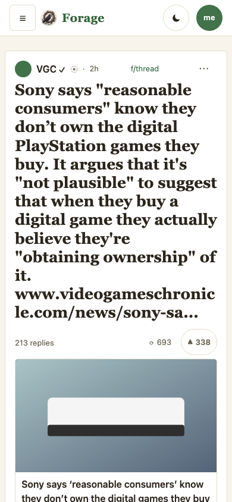
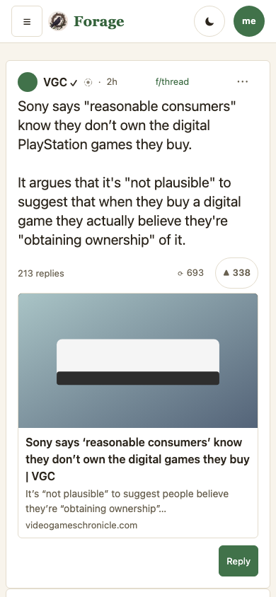
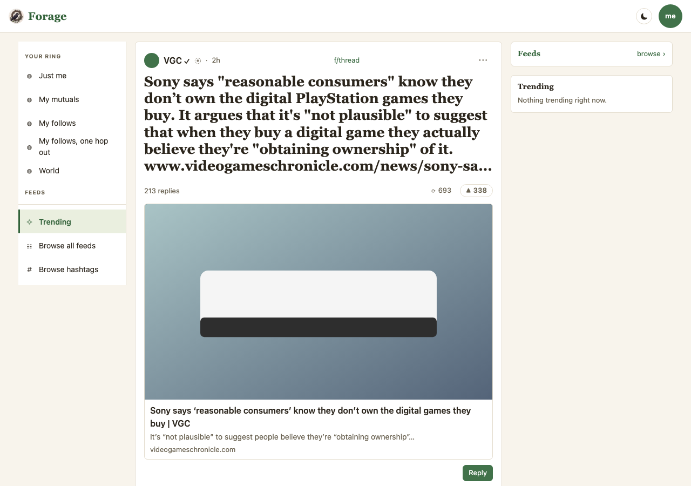
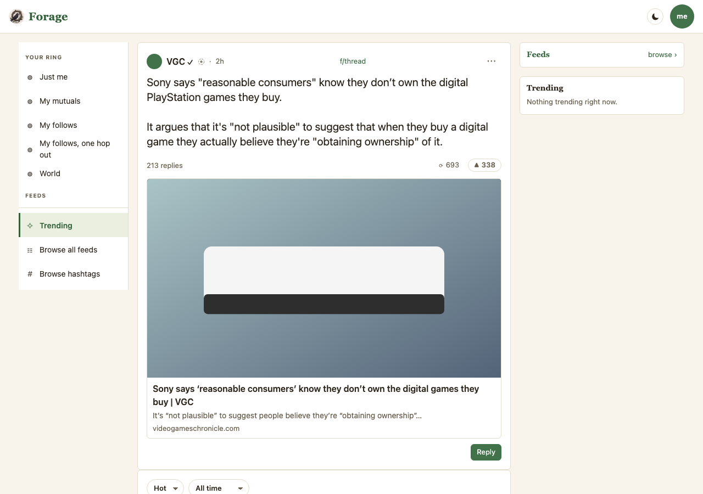
The row already rendered its text at body weight and already painted facets (feed-row v13), so what moves here is only the line structure and the trimmed address — the two halves of the same record. This is where to judge decision 4: in the Current column the address sits between the words and the card that carries the same link with its headline, its description and its host.
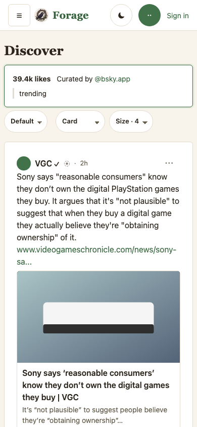
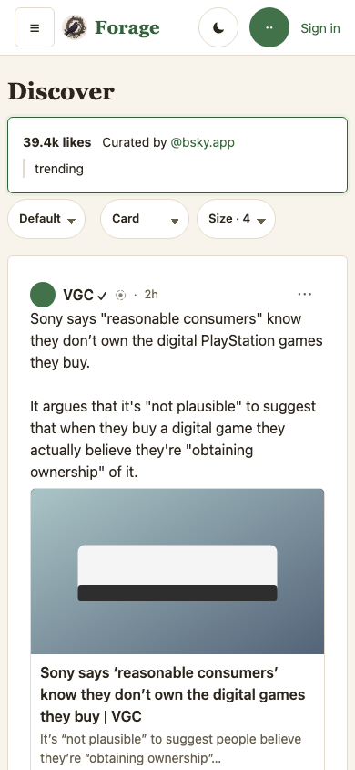
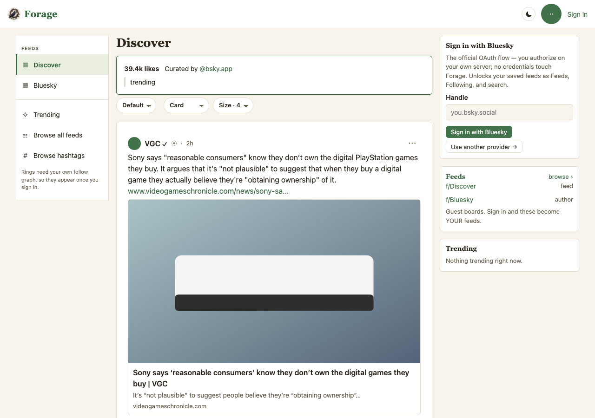
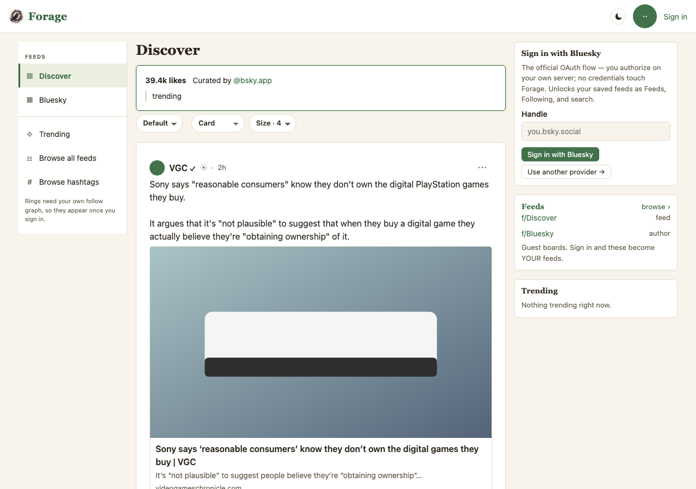
The first reply carries all three facet kinds at once: a truncated article link, an
@mention, and a #tag. Current: all three are plain text — a thread
node's shape carried no facets at all, so this has been true of every comment on every thread since
the lens shipped. Proposed: the link opens the article (not the truncated display string),
the mention goes out to the profile on bsky.app, and the tag opens as a board here. The second
reply's blank line is kept in both columns — comments already went through a renderer that
preserved it, which is what made the head the surface out of step.
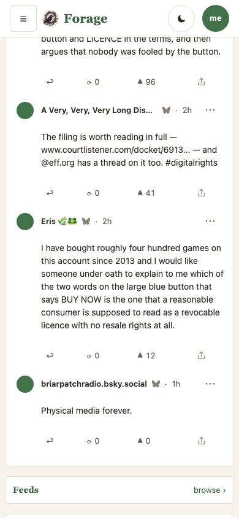
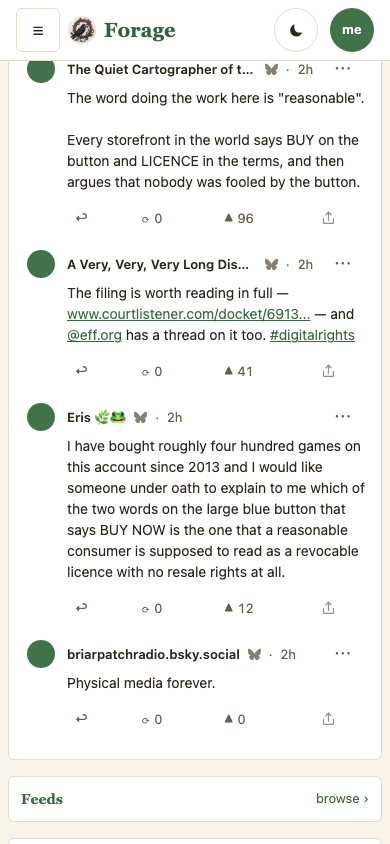
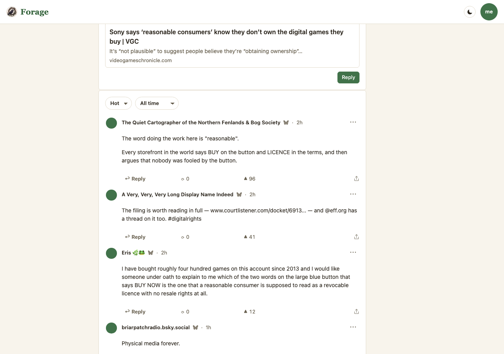
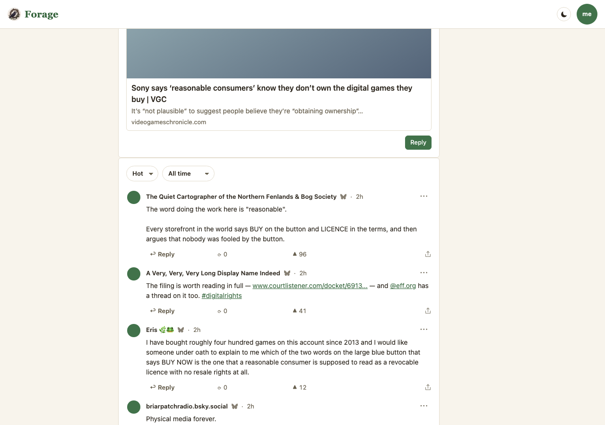
Two rows in one frame. Top: a statement link whose page has no og:image. Current renders the post's truncated display text and nothing else — the lens refused to build any media, so the link had nowhere to go; Proposed gives it a card with its title, its description and its host, and no empty picture frame above them. Bottom: a post using single newlines as a list ("in re… / 09:00 PT / streamed on the court's channel") — one run today, three lines on the branch.
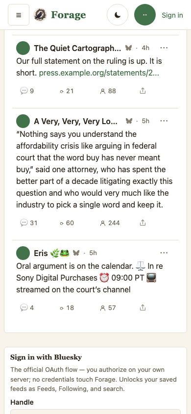
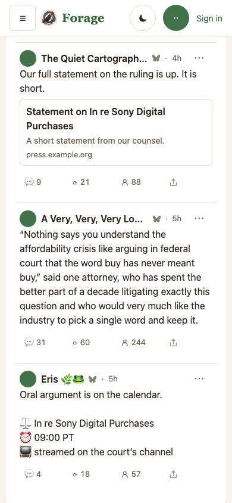
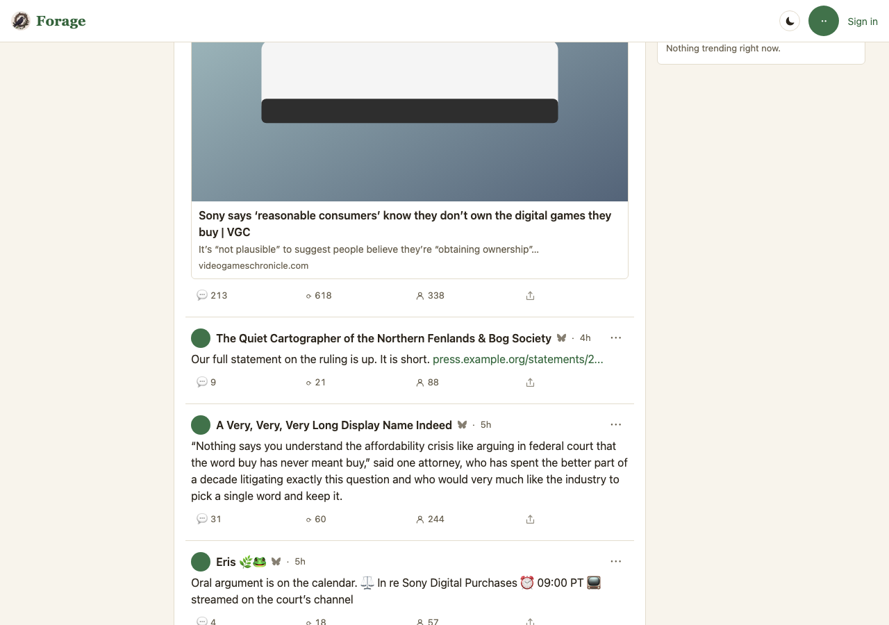
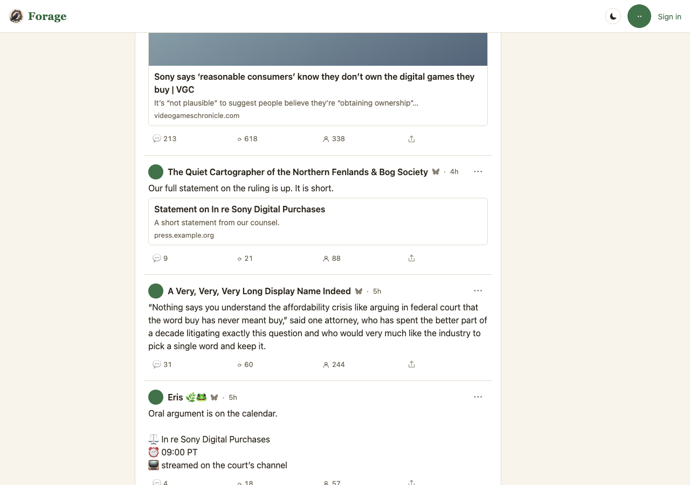
MOCKS.md P5: every promise a Proposed frame makes that a test can hold is held by a
test in the gate, so approving the frame approves what the gate runs. Eight claims live in
e2e/mock-posttext.workflow.mjs, against the same fixture these pictures come from.
| # | Kind | Claim |
|---|---|---|
| 1 | look | The head's words are ≤21px, weight 400, in the body face — computed, not asserted from the CSS source. |
| 2 | measure | white-space is pre-wrap and the two blocks are drawn ≥10px apart — measured with a Range over the real text node, so a break that exists in the string but not on screen fails. |
| 3 | structure | The head does not contain the card's url, and still ends with "obtaining ownership" of it. — the trim cuts the duplicate and nothing else. |
| 4 | measure | Nothing unclipped runs past 390px, and the page does not scroll sideways. Two checks, because a scrollWidth check cannot fail under overflow-x: clip and a rect check false-positives on the media stage's deliberately-wider blurred backdrop. |
| 5 | measure | The card's top is within the first 844px — the reader reaches the article without scrolling. |
| 6 | structure | The first reply has exactly three anchors, and each goes where its kind should: the article, bsky.app/profile/…, and /h/…. |
| 7 | structure | A thumbnail-less external renders a card with its title and no empty stage. |
| 8 | structure | The row trims the same url and keeps the same line structure — the row and the head agree. |
| Decision | File | What changed |
|---|---|---|
| 1, 2, 3 | js/ui/lens-views.js · the thread head | el('h1', p.format === 'link' ? {} : {class:'posttext'}, p.title.slice(0,300)) → el('h1', {class:'posttext'}, ...headWords(p)). |
| 2 | css/app.css · .posttext | white-space: pre-wrap; overflow-wrap: break-word, and a 68ch measure on the head. |
| 4 | js/substrates/lens.js · trimCardLink | New pure function. Trims only the last facet, only when it ends the text, only when its uri is the card's own (trailing slash aside), and never down to nothing. Cuts on UTF-8 bytes, because facet offsets are bytes. |
| 5 | js/substrates/lens.js · the node shapejs/ui/components.js · commentNode | facets added to a thread node; commentNode gains a ctx.textNode seam — the same shape postRow already used for titleNode. The memory tier keeps its markdown renderer untouched. |
| 6 | js/substrates/lens.js · media shapingjs/ui/lens-views.js · externalCard | The guard moves from external?.thumb to external?.uri; thumb is explicitly null when absent and the card skips its stage. |
| — | js/ui/lens-views.js | Three copies of the facet segment mapping (the row's, the quoted body's, the self-thread continuation's) are now one. |
Gate on the branch: npm test 673/673, npm run conformance
86/86, npm run reference-gate 2/2, npm run workflows 31 found, 0 failed.
| v | Day | Commit | What |
|---|---|---|---|
| 1 | 2026-09-01 | forage@29e6858 | First revision. Six decisions, four proposals, eight frames, all captured — Current from forage@8081fc9, Proposed from the branch. Nothing on this page is drawn. |